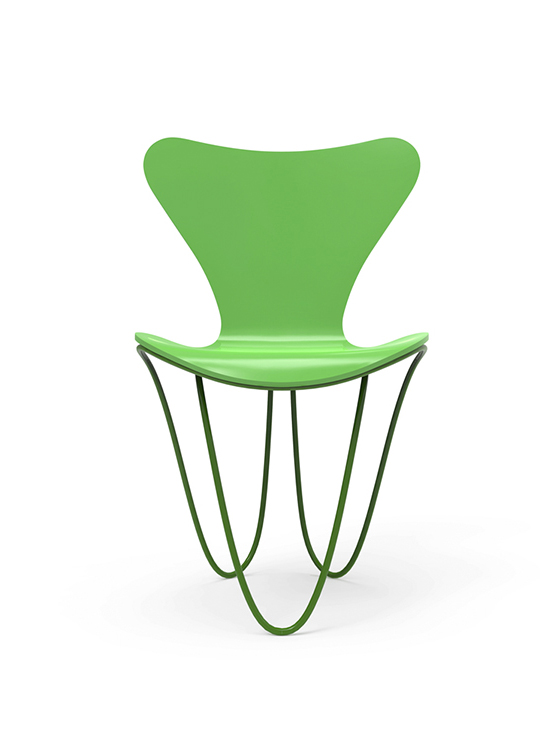
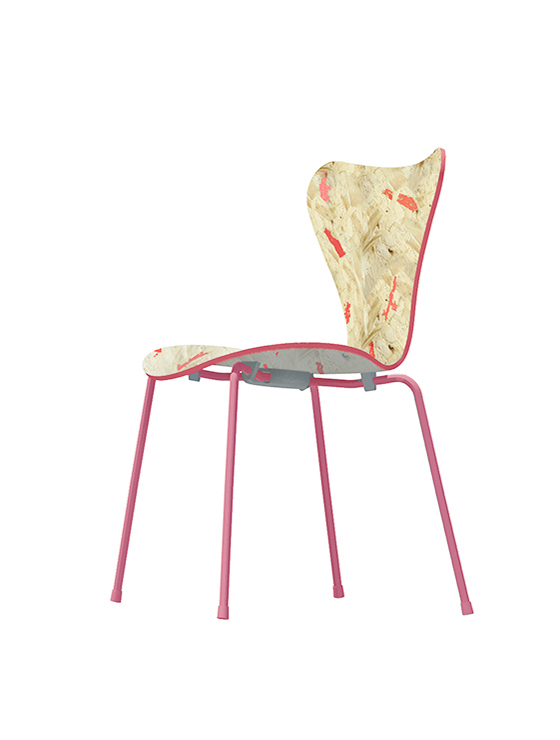
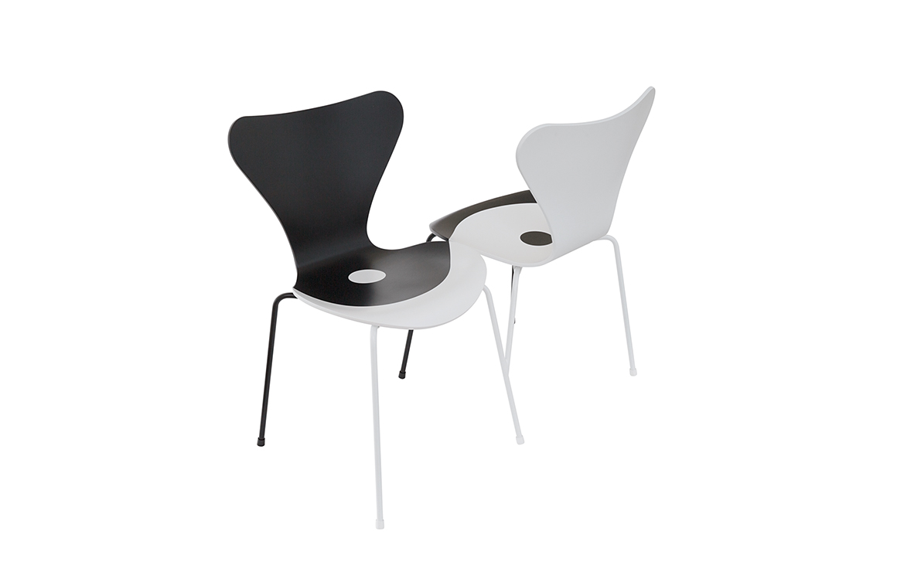
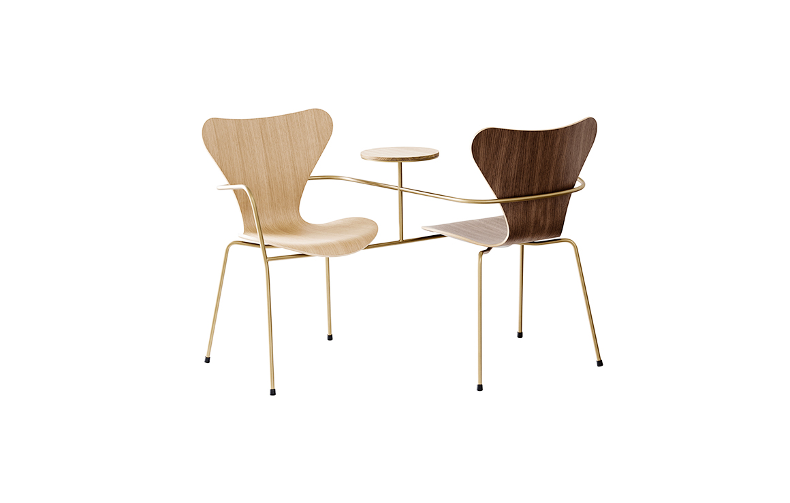
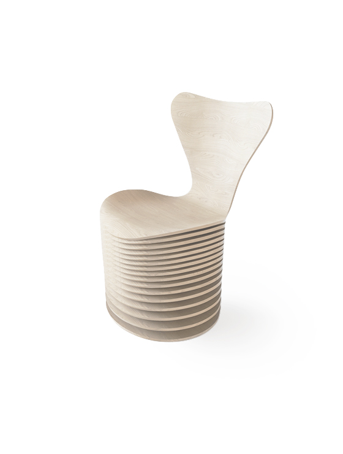
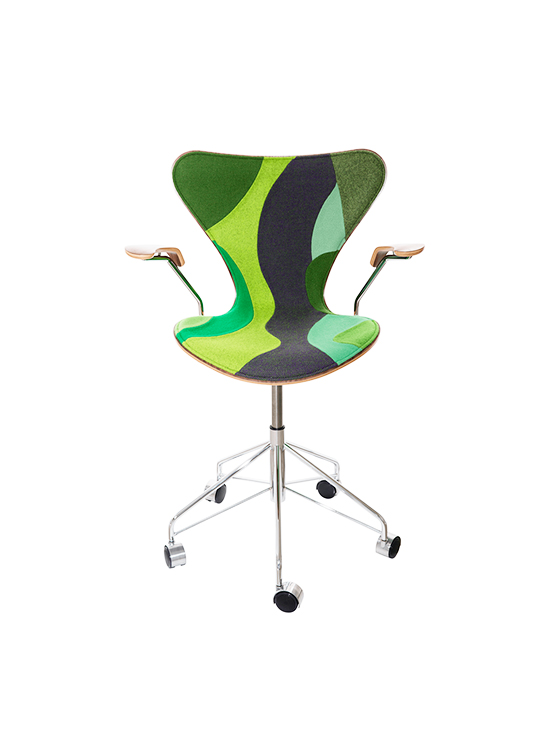

7 COOL ARCHITECTS
프리츠 한센은 7개의 유명 건축사와의 콜라보를 통해서 2015년에 60주년을 맞이하는 Series 7™의 독특한 오마주 제품을 발표했습니다.
프리츠 한센은 7개의 유명 건축사와의 콜라보를 통해서 2015년에 60주년을 맞이하는 Series 7™의 독특한 오마주 제품을 발표했습니다. 2015년 7월 16일에 벨기에의 겐트디자인뮤지엄에서 특별 전시회가 열렸습니다. 이 전시에서 프리츠 한센은 상징적인 제품인 Series 7™ 에 대한 견해를 제공할 7개 건축사를 초청했습니다. 이러한 건축사에는 비야케 잉겔스 그룹, 카를로스 오트 & 카를로스 폰스 데 리온, 장 누벨 디자인, 운 이가라시, 네리 & 후, 스뇌헤타, 자하 하디드 디자인이 포함됩니다. 겐트디자인뮤지엄에서 전시의 포문을 연 후, 이 전시는 다음 지역으로 오슬로를 택했습니다.
아르네 야콥센의 대부분의 체어 디자인과는 달리 Series 7™은 특정 상황을 배경으로 제작되지 않았습니다. 노보 노디스크의 구내 식당을 위해 맞춤화 된 체어인 앤트나 옥스퍼드의 성 캐서린 대학교를 위해 만들어진 옥스퍼드 체어와는 다릅니다. 이로 인해 Series 7™은 어떠한 해석에도 열려있고 다양한 상황에서 활용 가능한 보편적인 품질을 보유하게 되었고 이는 "7개 유명 건축사"를 초청한 해당 전시에서도 드러났습니다. 이 전시에서 세계 각지에서 모인 7개 건축사의 대표는 자신의 문화적 배경과 개인적 건축 컨셉을 바탕으로 Series 7™에 대해 해석했습니다.
프리츠 한센의 야콥 홀름 대표는 "지금으로부터 60년 전 아르네 야콥센은 Series 7™를 디자인했습니다. 올해에는 이 체어를 해석하기 위해 초청 받은 7개 건축사에 장 누벨, BIG, 자하 하디드, 스뇌헤타, 네리 & 후가 포함되었습니다. 그 결과, 시간을 초월하는 디자인은 어느 시대에서나 그 힘을 발휘한다는 것이 입증되었고, 다시 말해 이 의자는 오늘날에도 여전히 동일한 가치를 인정받습니다." 라고 말했습니다. 자하 하디드의 스페셜 에디션은 Series 7™를 구조와 지지의 역동적이고도 끊김없는 표현으로 형식화 했습니다. 두 개의 연속적인 스틸 로드로 형성된 조각적 베이스는 바닥까지 이어져 파도 모양의 상징적인 플라이우드 시트를 포용합니다.
자하 하디드 디자인 의 자하 하디드 대표는 "7 체어는 시간을 초월하는 독특한 형태의 실루엣을 자랑하며 이러한 실루엣은 베이스가 변경되는 방식에 따라 다양하게 변합니다. ZHD는 베이스와 쉘이 우아하게 서로 연계되고 통합되는 방식으로 쉘을 부드럽게 포요하는 베이스를 디자인 함으로써 이들 간의 관계를 밝히고자 했습니다." 라고 말했습니다.
7 COOL
ARCHITECTS
-

ZAHA HADID DESIGN
자하 하디드 디자인
Series 7™ 는 시간을 초월하는 독특한 형태의 실루엣을 자랑하며 이러한 실루엣은 베이스가 변경되는 방식에 따라 다양하게 변합니다. ZHD는 베이스와 쉘이 우아하게 서로 연계되고 통합되는 방식으로 쉘을 부드럽게 포요하는 베이스를 디자인 함으로써 이들 간의 관계를 밝히고자 했습니다.
-

JUN IGARASHI
준 이가라시
-

JEAN NOUVEL DESIGN
장 누벨 디자인
이 디자인은 대조적인 컬러와 병렬이 특징적인 장 누벨 디자인 시그니처의 전형입니다.
-

NERI & HU DESIGN
네리 앤 후 디자인
-

BIG
빅
디자인의 포인트는 어디에서 영감을 얻는 가입니다. 레이어드 베니어 소재와 스태킹 구조로 실용성을 강조합니다. 프리츠 한센의 아이코닉한 요소가 겹겹이 쌓여 만들어내는 새로운 스타일로 특별한 분위기를 만들어 보세요.
-

CARLOS OTT ARCHITECTS &
CARLOS PONCE DE LÉON ARCHITECTS칼로스 오트 & 칼로스 폰스 데 레온 건축사